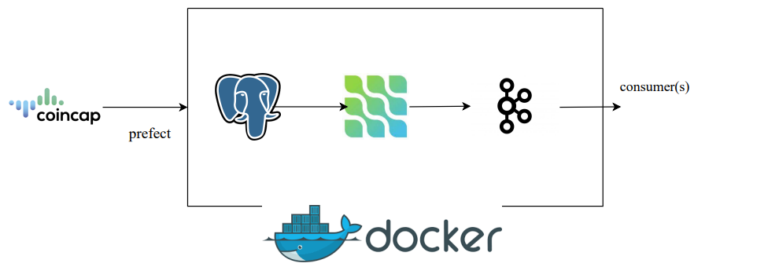
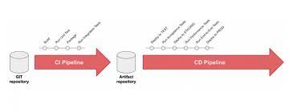
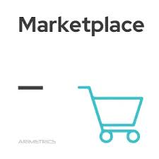

This project is a data pipeline project that focuses on extracting, transforming, and loading asset data obtained from an external API.
This documentation provides an overview of the project's structure, components, and how to get started.

.jpg)
Our project simulates a high-transaction financial company that relies on a cryptocurrency API as a data source.
The primary goal is to ingest real-time data from this API, transform it, and distribute it to two different data stores: MongoDB and PostgreSQL.
This architecture is designed to ensure data reliability, scalability, and availability, making it suitable for mission-critical financial operations.
Welcome to the Divvy End-to-End data engineering project! This project aims to automate the process of downloading, transforming,
and analyzing Divvy bike data using a combination of technologies including Docker, Google Cloud, Prefect, and more.

This project provides an overview of the Chicago Crimes API data pipeline developed using Mage AI. This pipeline extracts data from the Chicago Crimes API, processes it, and exports it to Google Cloud Storage.
The pipeline is designed to automate the data retrieval and storage process, making it easier to work with the data for analysis or further processing.
This data engineering project which defines an ETL (Extract, Transform, Load) workflow using Prefect to fetch data from the web, clean it, and load it into Google Cloud Storage (GCS).
The script is designed to work with taxi trip data but can be adapted for other datasets..
This Django CRM (Customer Relationship Management) project is a project application for managing customer data.
As an administrator, you have full control to perform CRUD (Create, Read, Update, Delete) operations on customer records.
This project serves as a foundation for building more advanced CRM systems tailored to specific business needs..
In this project am doing a simple ETL project: 1.
I am extracting data from coincap api the date am pulling is for bitcoin price 2.clean the extracted data by ensuring we only have the necessary data for time series 3.
load the data into postgres database for analysis.

This Django marketplace project is a interesting application for managing customer data in a marketplace setup. As an administrator,
you have full control to perform CRUD (Create, Read, Update, Delete) operations on customer records.
This project serves as a foundation for building more advanced Marketplace systems tailored to specific business needs.